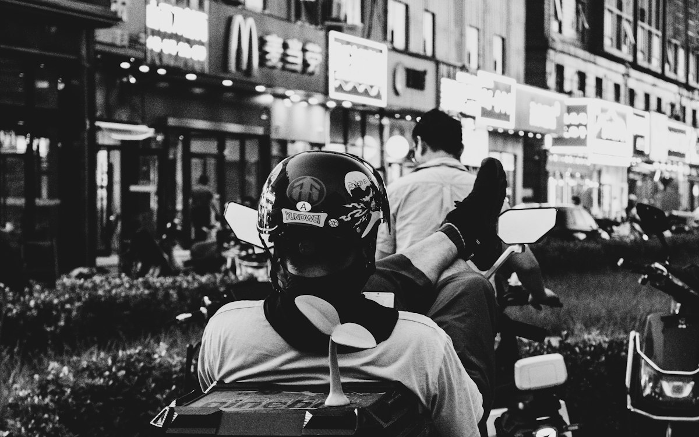

Kurye Kazancı Nasıl Artırılır? 9 Pratik Öneri
Aynı saatlerde çalışan iki kuryenin kazancı neden farklı olur? Kurye ücretlerinin nasıl hesaplandığını ve kazancını artırmak için bugün uygulayabileceğin 9 öneriyi derledik.

Kuryelikte kazanç; ne kadar çalıştığına olduğu kadar nasıl çalıştığına da bağlıdır. Aynı bölgede, aynı saatlerde çalışan iki kurye arasında belirgin fark olabilir. Bu farkı yaratan şeyler çoğu zaman küçük alışkanlıklardır. Önce kurye ücretlerinin nasıl hesaplandığına, ardından kazancını artırmanın pratik yollarına bakalım.
Kurye ücretleri nasıl hesaplanır?
Kurye ödemeleri genellikle şu modellerden biriyle ya da bunların birleşimiyle yapılır:
- Paket başı: Teslim ettiğin her paket için belirli bir ücret alırsın. Ne kadar çok paket, o kadar çok kazanç.
- Saatlik / vardiyalı: Çalıştığın saat üzerinden ücret alırsın; paket sayısı düşük olsa da kazancın belirlidir.
- Karma model: Saatlik ücretin üzerine paket başı ödeme eklenir.
- Prim ve bonuslar: Yoğunluk, performans veya belirli paket hedeflerine göre ek ödemeler.
Hangi modelde çalışırsan çalış, kazancını belirleyen iki şey vardır: birim zamanda teslim ettiğin paket sayısı ve bu süreçteki giderlerin. Aşağıdaki önerilerin hepsi bu ikisinden birini iyileştirmeye yöneliktir. Tahmini kazancını görmek için kazanç hesaplayıcımızı da kullanabilirsin.
1. Yoğun saatleri doğru seç
Siparişler öğle ve akşam yemeği saatlerinde, hafta sonlarında ve kötü havalarda artar. Esnek çalışabiliyorsan bu saatleri önceliklendirmek, aynı sürede daha fazla paket taşımanı sağlar.
2. Bölgeni iyi tanı
Kısa yolları, site girişlerini, park yerlerini ve trafiğin yoğunlaştığı noktaları bilmek her teslimatta birkaç dakika kazandırır. Gün sonunda bu dakikalar birkaç ek teslimat demektir.
3. Teslim alma ve teslim etme süresini kısalt
Telefonunun şarjlı, navigasyonunun açık, çantanın düzenli olması; restoranda ve müşteri kapısında geçen süreyi kısaltır. Adres eksikse müşteriyi kapıya varmadan arayıp teyit etmek de zaman kazandırır.
4. Motosikletinin bakımını aksatma
Arızalanan bir motosiklet, çalışamadığın bir gün demektir. Yağ değişimi, zincir ve fren kontrolü gibi periyodik bakımları zamanında yaptır. Doğru lastik basıncı ve yumuşak sürüş, yakıt giderini de azaltır.
5. Güvenli sür
Hız, kısa vadede birkaç dakika kazandırıyor gibi görünse de bir kaza hem sağlığını hem de haftalarca kazancını kaybetmek demektir. Kask ve eldiven zorunludur; koruyucu ekipmanla ve trafik kurallarına uyarak sürmek uzun vadede en kârlı tercihtir. Ekipman listesi için moto kurye ekipmanları yazımıza göz atabilirsin.
6. Müşteri memnuniyetine önem ver
Paketi düzgün taşımak, kibar olmak ve teslimatı zamanında yapmak; hem işletmenin seni tercih etmesini hem de varsa performans primlerini doğrudan etkiler.
7. Gelir ve giderini takip et
Haftalık kazancını, yakıt, bakım ve telefon giderlerini basit bir tabloda tut. Hangi gün ve saatlerin gerçekten kazançlı olduğunu ancak böyle görebilirsin.
8. Sana uygun çalışma modelini seç
Tam zamanlı, yarı zamanlı (akşam) ve hafta sonu çalışma seçenekleri farklı yaşam düzenlerine uyar. Ek gelir arıyorsan yoğun akşam saatlerinde yarı zamanlı çalışmak, kısa sürede iyi bir kazanç sağlayabilir.
9. Prim sistemini öğren, ekibinle iletişimde kal
Çalıştığın firmanın prim ve bonus kurallarını net öğren. Operasyon ekibiyle iyi iletişim kurmak; yoğun bölgelere yönlendirilmeni ve sorunların hızlı çözülmesini sağlar.